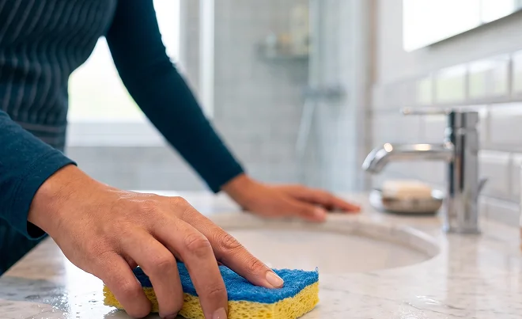

Limpeza Residencial
Atendimento para casas e apartamentos, de acordo com a carga horária contratada e as prioridades do cliente.
AgendarO WhatsApp oficial da Prime ainda não foi configurado neste site. Os contatos de atendimento estão no rodapé.
Atendimento personalizado, profissionais selecionadas e acompanhamento da Prime em cada etapa.
Informe o que você precisa, encontre a carga horária mais adequada e solicite seu atendimento de forma simples e organizada.
Limpeza residencial empresarial comercial condominial pré e pós-mudança pré e pós-eventos passadoria
Precisou de uma limpeza, mas não sabia a quem recorrer?
Muitas vezes, conseguir uma indicação parece ser a solução mais simples. Mas nem sempre é fácil encontrar alguém que esteja preparada para o serviço que você precisa, que seja de confiança e que tenha disponibilidade justamente no dia e horário desejados.
Quando a contratação acontece diretamente, o cliente também precisa organizar sozinho diversos detalhes do atendimento.
Foi pensando justamente nessa experiência que a Prime surgiu.
Aqui, você conta com uma empresa para ajudar a organizar esse processo.
A Prime orienta a contratação, ajuda a identificar a carga horária mais adequada, verifica a disponibilidade e acompanha o atendimento durante o processo.
Mais praticidade para contratar.
Mais organização para sua rotina.
Mais tranquilidade durante o atendimento.
A Prime Limpeza Especializada nasceu para tornar a contratação de serviços de limpeza mais prática, organizada e personalizada.
Atendemos diferentes necessidades, desde residências até empresas, comércios, condomínios, mudanças e eventos.
Nosso atendimento começa entendendo o que você precisa.
A partir dessas informações, orientamos a contratação, verificamos a disponibilidade e organizamos o atendimento de acordo com a necessidade apresentada.
E você conta com a Prime durante todo o processo.
A diária é realizada dentro da carga horária contratada, de acordo com as características do ambiente e as prioridades apresentadas pelo cliente.
A Prime ajuda você a identificar uma carga horária adequada para sua necessidade, mas a quantidade de tarefas realizadas dependerá do tempo disponível, do tamanho e das condições do local e do nível de detalhamento solicitado.
Você informa suas prioridades. A Prime ajuda a organizar o atendimento.
Calcular minha carga horáriaA Prime não realiza limpeza pós-obra especializada. Em imóveis que passaram por reforma, não realizamos remoção de respingos de tinta, rejunte, cimento, cola ou retirada de entulho.
A Prime preza pela segurança dos clientes e das profissionais durante a realização dos serviços.
Por esse motivo, nossas profissionais não realizam atividades em alturas superiores a 2 metros nem tarefas que exijam equipamentos especiais ou ofereçam riscos incompatíveis com a atividade de limpeza.
Áreas externas somente serão lavadas quando houver mangueira disponível no local.
Informe o tipo de serviço, localização, características do ambiente e suas principais prioridades.
As informações fornecidas ajudam a orientar a escolha da carga horária mais adequada para o atendimento.
Informe a data, horário e demais informações necessárias para o agendamento.
Nossa equipe verifica a disponibilidade para o atendimento solicitado e organiza o serviço.
A profissional designada realiza o serviço dentro das condições e prioridades estabelecidas para a diária.
Nossa equipe permanece disponível para suporte durante o atendimento.
Você pode informar sua preferência durante o agendamento. A solicitação será considerada sempre que houver disponibilidade para a data, horário e região escolhidos.
Nossa calculadora ajuda você a encontrar uma carga horária sugerida de acordo com as características do atendimento.
Calcular minha diáriaCritérios próprios de seleção, referências e documentação.
Orientação de acordo com a necessidade apresentada.
A Prime permanece disponível para suporte durante o atendimento.
Agendamento e pagamento organizados em um único processo.
Para clientes que realizam atendimentos recorrentes, a Prime oferece condições especiais para pacotes mensais.
R$ 20 de desconto no valor total do pacote.
R$ 40 de desconto no valor total do pacote.
O desconto é aplicado sobre o valor total do pacote, e não individualmente em cada diária.
Conhecer pacotesSem acréscimo de deslocamento.
Atendimento com adicional de deslocamento.
Limpeza residencial, empresarial e comercial, condominial, pré e pós-mudança, pré e pós-eventos e passadoria de roupas.
A calculadora sugere uma carga horária de acordo com as características do atendimento. A quantidade de tarefas realizadas dependerá do tempo disponível, do tamanho e das condições do local e do nível de detalhamento solicitado.
Sim. Você pode informar sua preferência durante o agendamento.
Não. A solicitação será considerada sempre que houver disponibilidade para a data, horário e região escolhidos.
O pagamento da diária é realizado antecipadamente e de forma integral, por PIX, transferência ou depósito, depois que a Prime verifica a disponibilidade. A Prime pede o comprovante até 14h do dia útil anterior à diária.
Sim. A Prime atende a Região Metropolitana, com adicional de deslocamento.
A Prime verifica a possibilidade de substituição conforme a disponibilidade. Quando não houver possibilidade de substituição, o atendimento poderá ser remarcado ou o valor pago poderá ser estornado, conforme o caso.
Não. A Prime não realiza limpeza pós-obra especializada. Em imóveis que passaram por reforma, não realizamos remoção de respingos de tinta, rejunte, cimento, cola ou retirada de entulho.
A lista completa está em O que a Prime não realiza, nesta página. Também não realizamos atividades em alturas superiores a 2 metros nem tarefas que exijam equipamentos especiais.
Conte para a Prime o que você precisa e organize seu próximo atendimento de limpeza.
Atendimento em Belo Horizonte e Região Metropolitana
Profissionais selecionadas Atendimento personalizado Suporte da Prime